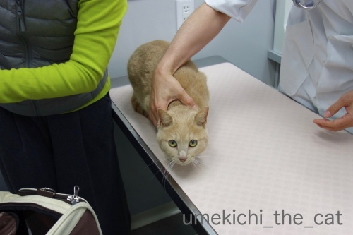
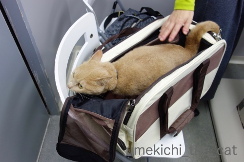
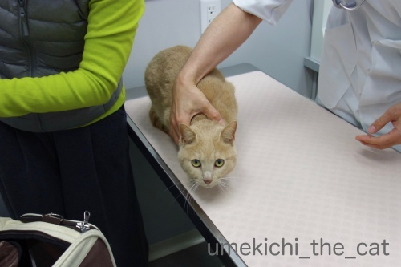
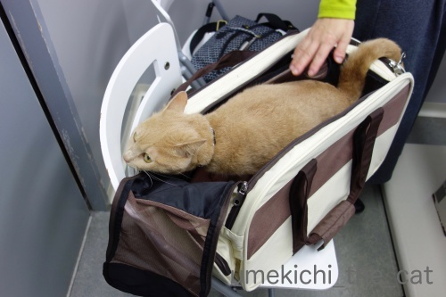

そのかさぶたは一体なんだ！？ [梅吉]
先日お風呂に入って蒸しタオルで梅吉の顔を拭いていたらあごに何かが・・・

（指差しているのはボーカロイドキャラに扮したちぃさんです(⌒-⌒;）
これです。
夕方ブラシをした時には無かったのに・・・
このまるいボコッとした穴。
私が思い当たったのは真菌かあごニキビ。
真菌だったら大ごとです。

翌日病院へ。
待合室でお怒りの梅吉さん。

![[猫]](https://blog.ss-blog.jp/_images_e/101.gif) びょういんは らいげつの はずやんかー！
びょういんは らいげつの はずやんかー！

念の為猫ベッドに落ちていた剥がれたカサブタも持って行きました。
あごを丹念に診察されて・・・・・

本にゃんはさっさとキャリーに戻りますw
診察結果は「あごニキビ」でした。
猫のあごニキビは、食事後口の周りについた食べかす等が引き起こすなどと言われていますが
（原因は諸説あってはっきりとはわかっていないようですよ。）
梅吉の場合は中性脂肪値の高い体質ゆえ出来やすいようです。
治療は患部を消毒するくらいしかないとのこと。
消毒もやりすぎると皮膚を傷つけて余計に悪化させてしまうかもしれないので
1日一回消毒液をつけたコットンで「ぽんぽんぽん」で十分だと。
梅吉の場合は中性脂肪値がもう少し低くなればあごニキビも自然に治るかな？
とのことでした。
ちょっと気の長い治療になりそうですが日常生活で注意することは無し、
と言われたのでホッ＾＾
真菌だったら（水虫みたいなものです）人間に感染る可能性もあるし
家中を消毒しなければいけないし一緒にお風呂なんてもってのほかです。

家に帰ってきてご飯を食べておかーさんのお膝で腑抜け顔(≧▽≦)
お風呂、一緒に入っても大丈夫だって。

そのぶちゃいくな寝顔がいいねー！
ちなみに寒い時期は菌の働きが弱くなるので真菌感染はほとんど無いそうです。
 ↑ガブッと一押し↑
↑ガブッと一押し↑
ZEPETOミッション、JK DAY！
もはやおばちゃん達の変身願望を叶える場になってきたようにも思えます(*>艸<)
（おばちゃんじゃ無い方ごめんなさいm(_ _)m）
中学時代はこんなだったちぃさん。
高校入学時。
高一の夏休みが終わるとこんな風に。
高二の春。完全にギャル化w
2kせんせに怒られるの図。あれ？せんせってば隣のがっこの人だったよねw
遊び友達とグループショット。
チャーさんは夜遊びせずにもう寝るところだったみたいw
チャーさんとツインテショット。
初音ミク的ボーカロイド風コーデというミッション。
「私が知っているのは初音ミクくらいだなぁ」と
とりあえずこのロングツインテールにしたのですが・・・
みなさんそろってこの髪型でしたw
そして、なんと！
お届け物スクラッチで500コインがあたりました！
証拠写真。
あたり画面は荷物を受け取るお姉さんが笑っている顔だったと思うのですが
一瞬でこの画面に変わっちゃいました。
で、あたりの500コインとスクラッチの３コイン合わせて503コインげっとー！
当たるものなんですね。
2〜３日前の夜、ZEPETOアプリ変な動作してませんでしたか？
終わったはずの（DL後初回の）チュートリアルクエストがなぜか出来る。
その後も1日３セットのはずのクエストが次々出来て・・・
10セットくらいクエストしたかな。そのうちアプリが落ちた。
再起動したら正常に戻ってましたがその間貯めたコインはキープされてました。
おかげで私ちょっとお金持ちです(≧▽≦)
これ、内緒の話ですよー！

（指差しているのはボーカロイドキャラに扮したちぃさんです(⌒-⌒;）
これです。
夕方ブラシをした時には無かったのに・・・
このまるいボコッとした穴。
私が思い当たったのは真菌かあごニキビ。
真菌だったら大ごとです。

翌日病院へ。
待合室でお怒りの梅吉さん。


念の為猫ベッドに落ちていた剥がれたカサブタも持って行きました。
あごを丹念に診察されて・・・・・

本にゃんはさっさとキャリーに戻りますw
診察結果は「あごニキビ」でした。
猫のあごニキビは、食事後口の周りについた食べかす等が引き起こすなどと言われていますが
（原因は諸説あってはっきりとはわかっていないようですよ。）
梅吉の場合は中性脂肪値の高い体質ゆえ出来やすいようです。
治療は患部を消毒するくらいしかないとのこと。
消毒もやりすぎると皮膚を傷つけて余計に悪化させてしまうかもしれないので
1日一回消毒液をつけたコットンで「ぽんぽんぽん」で十分だと。
梅吉の場合は中性脂肪値がもう少し低くなればあごニキビも自然に治るかな？
とのことでした。
ちょっと気の長い治療になりそうですが日常生活で注意することは無し、
と言われたのでホッ＾＾
真菌だったら（水虫みたいなものです）人間に感染る可能性もあるし
家中を消毒しなければいけないし一緒にお風呂なんてもってのほかです。

家に帰ってきてご飯を食べておかーさんのお膝で腑抜け顔(≧▽≦)
お風呂、一緒に入っても大丈夫だって。

そのぶちゃいくな寝顔がいいねー！
ちなみに寒い時期は菌の働きが弱くなるので真菌感染はほとんど無いそうです。
ZEPETOミッション、JK DAY！
もはやおばちゃん達の変身願望を叶える場になってきたようにも思えます(*>艸<)
（おばちゃんじゃ無い方ごめんなさいm(_ _)m）
中学時代はこんなだったちぃさん。
高校入学時。
高一の夏休みが終わるとこんな風に。
高二の春。完全にギャル化w
2kせんせに怒られるの図。あれ？せんせってば隣のがっこの人だったよねw
遊び友達とグループショット。
チャーさんは夜遊びせずにもう寝るところだったみたいw
チャーさんとツインテショット。
初音ミク的ボーカロイド風コーデというミッション。
「私が知っているのは初音ミクくらいだなぁ」と
とりあえずこのロングツインテールにしたのですが・・・
みなさんそろってこの髪型でしたw
そして、なんと！
お届け物スクラッチで500コインがあたりました！
証拠写真。
あたり画面は荷物を受け取るお姉さんが笑っている顔だったと思うのですが
一瞬でこの画面に変わっちゃいました。
で、あたりの500コインとスクラッチの３コイン合わせて503コインげっとー！
当たるものなんですね。
2〜３日前の夜、ZEPETOアプリ変な動作してませんでしたか？
終わったはずの（DL後初回の）チュートリアルクエストがなぜか出来る。
その後も1日３セットのはずのクエストが次々出来て・・・
10セットくらいクエストしたかな。そのうちアプリが落ちた。
再起動したら正常に戻ってましたがその間貯めたコインはキープされてました。
おかげで私ちょっとお金持ちです(≧▽≦)
これ、内緒の話ですよー！

カフェオレ色の梅吉

梅吉 2023年8月10日 永眠


梅吉と出会った譲渡会

犬猫の理由なき殺処分ゼロ
妄想広告
UMEKICHI 光

爆発的に早い！
時々攻撃的！
Thanks to Mr.Boss365
爆発的に早い！
時々攻撃的！
Thanks to Mr.Boss365

梅吉さん、重症でなくてよかったです。
猫にもニキビができるのですね。
タルちゃんはオデヴーですがニキビはできたことがないです。
誰だったかアゴにカビ？（たぶん真菌）に感染した子がいました。
Naoちゃんは長毛なのであごの下が食べ物の汁で時々ガビガビに
なっていることがあります。猫はあごの下は毛づくろいできないんだな~
と思いました。
ZEPETOたくさんクエストできるならラッキーでしたね、私はその逆で
通信状態が不良ですみたいな感じの表示でスキップができないことが
多々あります。でも次にやると思いのほか高額ゲットだったりします(笑
by marimo (2019-02-21 01:01)
ただのニキビで良かったです。放っておいても大丈夫だと思いますが、ちぃさんはキレイキレイしてあげないと気が済まないんでしょうねぇ。梅吉さんはシアワセ者です。
ガングロJKが意外と似合うのも分かりましたよ~。
by zombiekong (2019-02-21 02:25)
梅吉さん、早めの対応で一安心ですね。
今日も梅つながりですよ
by ニコニコファイト (2019-02-21 06:40)
あごニキビの写真、ありがとうございます。
こんな風になるとは知りませんでした。
我が家にはたくさん居ますけど
誰もニキビができた事はないです＾＾
by ぽちの輔 (2019-02-21 06:42)
ニキビで良かったですね。
しかし、小さい傷によく気づいてあげられましたね。偉いなー。
梅吉くん、病院でもなかなか堂々たるお姿。
実家のミイちゃんはビビリさんなので、病院ではママ(義姉)の背中に隠れてブルブル、診察台では看護師のおねえさんの胸に顔をつっこんでブルブル、らしいです^m^
ZEPETOミッション、面白いけど難しいーー。
なんでリアルに似合わないものは、アバターまで似合わないんだーー(笑)
by ChatBleu (2019-02-21 06:47)
一日一回消毒ぽんぽんで大丈夫なのですね！
重症化しなくて良かったです♪
梅吉さん！病院お疲れ様でした！
by きぃ (2019-02-21 07:24)
顎ニキビ、うちの娘と息子がたまに出来ます(⌒-⌒; )
がっついて食べて顎をなかなか拭かせてくれないから(*_*)
梅吉くん、蕩けたお顔可愛いですねぇ( ^ω^ )
大好きなお風呂タイムで病院の疲れを癒してもらってね=(^.^)=
by ニッキー (2019-02-21 07:44)
真菌じゃなくて本当に良かった。
なるほど、この季節は真菌の心配は少ないのね。
納得です。でもあごニキビも時間がかかるだろうから、
梅吉君頑張れー^^
ZEPETO、コインゲットおめでとう！
わたしはいまだに高額ゲットできてません^^;
コイン１とかばかり。ふざけるなー(笑)
えー、エラーでクエストでコインもらえたなんて羨ましい。。。
ほしいお洋服あるので、しばらくは節約するかも^^
とにかく貧乏よｗｗ
by リュカ (2019-02-21 09:56)
おはようございます。
梅吉君！！「あごニキビ」大事に至らなくて、少し安心です。
中性脂肪値・・・根気よく改善です。
おとなしく、ちょっと不安げな姿？梅吉君「撮影するな」の表情です。
ぶちゃいくな寝顔？ぶちゃいくではないですが・・・癒されます！！
小生猫も以前、アゴ下が変な状態の時ありました。
あごニキビや真菌を疑いましたが・・・
後ろ足で、アゴ下をかいて爪で傷をつけていました。
ZEPETO！！
高二の春・・・日焼けしてますね（笑）
危ない関係？（笑）赤パンツ？誰だろう？
リッカさんだけは、すぐわかる（笑）個性的な眉毛（笑）！？(=^･ｪ･^=)
by Boss365 (2019-02-21 11:07)
病院お疲れさまでした！
真菌じゃなくてホントよかった～(#^^#)
こてつ本体をコロコロした時に黒いツブツブがついて、ノミか？！ダニか？！と慌てて病院へ持って行ったらアゴにきびとの診断でした。
引っ掻いちゃうとかさぶたになるんですよね。
以来、歯磨き用の指サックをお湯で湿らせ晩ごはんの後にササッと拭いてノミ取りコームで仕上げ。
糸巻の歌「アゴを拭き拭き～拭いて拭いてとんとんとん♪」２コーラスがこてつの我慢の限界(≧▽≦)
もちろん手を噛みに来ますが、メッチャ痛いけど出血まではしない、絶妙の力加減で噛みつきます(^▽^;)
by ゆきち (2019-02-21 12:37)
猫ちゃんにもニキビとは びっくりしました しかも中性脂肪に関わるとは お大事にして下さいね 潰さない 潰さないですね
私も お届け物で一昨日？500もらったよ〜 いきなり 神々しある光があって 当たり〜！
スロット も先日 ZZZで 714ポイントゲット 更に広告見て2倍！又 楽しみです
おめでとうございます 1杯ポイント プレゼント！これガッカリしますね笑
by チャー (2019-02-21 13:39)
わぁっ、あごニキビで穴が開くのですね〜
真菌でなくてよかったです。
ちぃさんはキレイ好きで、
食後に梅吉さんの口元をキレイキレイしているでしょうから、
梅吉さんのあごニキビは食べかすではなくて、他の説が有力かもです。
おかーさんの膝の上は腑抜け顔ではなくて、幸せ顔ですよ（笑）
中学生のちぃさん、可愛いです（笑）
by kiki (2019-02-21 15:55)
だ・誰に内緒にすれば良い？
そんな口硬い方じゃないんだけど 俺
それはそうと JKコス良いよねぇ やっぱセーラー服は歳いってからの方が
似合うと思うんだよなぁ ガキが着てても萌えないもん
by (。・_・。)２ｋ (2019-02-21 17:42)
ちぃさん こんにちは
病院に連れていかれで、梅吉ちゃんにとっては災難だったけれども、先ずは、心配の病気ではなくてよかったですね。
梅吉ちゃんにとっては大変な一日だったけれど、家に帰ってきて顔も和やかです。
by SORI (2019-02-21 17:57)
梅吉さんは軽くて良かったですね！
病院では顔をいじられて、無抵抗ですか(^^)
by ma2ma2 (2019-02-21 18:16)
あごニキビだね。
若い猫ちゃんができやすい気がするけど諸説あるのね。
家も少し前からタラのあごに出来てた。
だいぶ治って毛も生え揃ってきたところです(*^-^*)
梅吉くんも早く治るといいね♪病院お疲れちゃま。
ZEPETO。ちぃさんのJKは可愛いと思うよ！まだまだ許される感じｗ
中学、高校とちぃさんの成長過程が垣間見れた感じ。
コイン大量ゲット！良かったね～(≧▽≦)
私も変な不具合は出ているけど、ラッキーな不具合はなしですｗ
by emi (2019-02-21 18:17)
梅吉さん、病院で頑張りましたね。
でも、ニキビ程度で良かったですよね(^^)
by kou (2019-02-21 18:24)
大事に至らなくて何よりですね。
「ニキビ」かあ。。。梅吉さん若いなあ。^^;
by yes_hama (2019-02-21 21:24)
↑上のコメントをアップした直後に地震速報が！
大きな被害が無いと良いのですが。。。
by yes_hama (2019-02-21 21:35)
梅吉さん
病院と自宅と お顔がぜんぜん違うね( (ミ｀エ´ミ)) ククク・・
真菌じゃなくて良かった♪
14千？(*´∇｀*)ｷｬ～～～
何でも買えちゃうね＾＾
by てんてん (2019-02-21 21:48)
ニキビができるお年頃？
そういうのじゃないか（ﾟ□ﾟ）
by 英ちゃん (2019-02-22 00:50)
よかったよかった！
その寝顔愛おしいわ(*´ω｀*)
by palpal (2019-02-22 16:31)
顎ニキビでこんなふうになるんですか～。
真菌じゃなくてよかった！
梅吉さん、お怒り？～もう安心ですにゃ＾＾
ギャルのちぃさんを見たらびっくりするでしょうねー！＾o＾
by sana (2019-02-22 18:55)
梅吉さんすぐ気がついてもらえて
消毒だけですんでよかったです。
高校生デビューおもしろい^m^
ギャル色、結構好きです。
by ふにゃいの (2019-02-23 15:48)
marimoさん＞
あごニキビもなかなか治らないので厄介なんですが
他の場所に感染ったりしないので気が楽です。
真菌だと全身に広がったりするから・・・
子供の頃実家で飼っていた猫が（多分）真菌にやられて
（その頃は動物病院でもそんな病気ってわからなかったみたい）
全身の毛が抜けて三毛猫だったのにスフィンクスみたいに
ヘアレスになっちゃって・・・
そんないや〜な思い出があるので一瞬背筋が寒くなりました。
ZEPETOわりと不具合ありますね！
再起動でだいたい元に戻るのでオッケーですけど。
たくさんコインエラーはまたならないかと密かに願ってます(*>艸<)
zombiekongさん＞
獣医さんも
「あまり消毒するとダメだからー
（ほんとはしなくて良いんだけどそれだと納得せーへんやろ。獣医心の声）
消毒薬出しとくからー」って感じでしたw
お風呂上がりなんどもしたくなる気持ちを抑えて
ぽんぽんぽん、しております！
ガングロJK、もっとヤマンバみたいにしたかったのですが
そんなアイテムがありませんでした(⌒-⌒;当たり前かwww
ニコニコファイトさん＞
そっこーで病院でした！
梅吉の健康面で問題があると私たちも凹んじゃいますから(⌒-⌒;
また梅繋がりがあるかな〜♪
ぽちの輔さん＞
あごニキビ自体は黒いブツブツなんですが
（デキモノというより毛穴の汚れみたいに見えます）
治りかけに剥がれてかさぶたになるそうです。
兄弟にゃんなら体質が似てると思うので
できにくい体質なんでしょうね＾＾羨ましい！！
ChatBleuさん＞
猫変態なので毎日ありとあらゆる見なくても良いとこまで見てますからー！
梅吉は病院ではお怒りにはなりますが怖がったりはしません。
心音を診察されても
「梅吉くん、めっちゃ平常心やわーー」と言われるんですよ(⌒-⌒;
おねえさんの胸に顔を突っ込んでブルブル・・・
ママではなくおねえさん、何気に若い方を選んでます？(*>艸<)
アバター、私はリアルもそうなんですがロングヘアが似合わない！
せめてアバターでしてみたいのにー！
（ツインテールはけっこうイケましたけど。爆）
きぃさん＞
お風呂上がりにポンポンしてますが今のところ患部は落ち着いています。
あまり気にせず、しか〜し注意して経過を見ていこうと思ってます！
病院の日は雨降りだったので車で行ったのですが
車が嫌いな梅吉はギャン泣きでした・・・
帰ってきたらすぐ元気いっぱいご飯を食べてご機嫌は治ってましたけど＾＾
ニッキーさん＞
ゴッドマザー様でもなかなか難しいアゴ拭き？
アルさんニケさんはなかなか素早くお逃げになるんでしょうか！
やるときは、やる！？0(≧▽≦)0
お風呂タイムにアゴをゴシゴシしたくなる衝動に駆られますが
グッと堪えてますwww
リュカさん＞
真菌じゃないかとどんよりしたけどよかったわー！
治るまで時間はかかると思うけど
今以上に悪化させないことだけを注意していこうと思ってます。
かさぶたになって「いずく」ないんだろうか（笑）と思ったけど
気にしている様子も後ろ足で引っ掻く様子もないので
私も必要以上に気にしないでおきます！
ZEPETOのお衣装、高いのは高いよねー。
でも絶対課金しないでがんばろうっ！
リュカさんも高額コインゲットできますように。
ちなみに500コインをかけるのはしてません。堅実でしょ＾＾
Boss365さん＞
あごニキビは治りにくいものではありますが
他の箇所に広がる心配もないのでちょっと安心しています。
すももちゃんは引っ掻いて傷ができちゃいましたか。
掻きグセだったりするとまたなるか、と心配ですね・・・
長〜いフォークで代わりにかきかき？0(≧▽≦)0
JKちぃさんは日サロに行ってカラコンして
渋谷に夜遊びしに行くんですよw
お家が松濤なので近い、というなんちゅう妄想(*>艸<)
赤パンツ＝パジャマなのはチャーさんでーす！
ゆきちさん＞
こてつくんもあごニキビ仲間でしたか。やんちゃ坊主には出来やすい！？
あごニキビも繰り返したり治りにくいものですが
他の箇所に感染っていく心配がない分ちょっと気が楽です。
ひどくなる子はあごが腫れる、とも聞きましたが
梅吉の場合今の所それはない様子。
梅吉の「拭いて拭いてとんとんとん♪」は夜のおやつタイムの前なのですが
コットンと消毒薬を手に持っても警戒することなく
「ぽんぽんするよー！」というとおやつだと勘違いして走ってきます(⌒-⌒;
ほぼ一週間経ちますが全然学ばないwwwww
食い気の勝る子でよかったです（爆）
チャーさん＞
あごニキビのできる猫は割といるんですよー。
梅吉は（生活習慣ではなく）中性脂肪が高い体質なので
薬を飲んでいるんですが思うように数値が下がらなくて。
出来てしまったニキビは人間と同じですね！
必要以上に触らないように、とのことでした＾＾
ZZZで714ポイントすごい！
揃ったことありますが300ポイントぐらいのシケた（笑）ポイントでしたーw
kikiさん＞
ニキビの治りかけがかさぶたとなって剥がれると
血が滲んで穴が開いた状態になっちゃいます。
見つけたときはオロナイン塗ろうかと思ったのですが
「余計なことはしちゃいかん！」とグッと我慢しました(⌒-⌒;
おっしゃる通り食事の後はお口もとキレイキレイしてましたが
体質でできやすいとなるとお薬の効果に期待するしかありません！
他の箇所に映る心配もないので必要以上に気にしないように心がけていますm(_ _)m
中学生の時はスカート長め（グレてませんよw)
高校生の時は制服を改造したり指定外のブラウス着たりする
ごく普通の子でしたが（笑）日焼けは未体験でしたー。
そんな流行もなかったし。
そんな時代だったらやってかなぁ・・・と
あどけない子からの（爆）妄想の変身でした(*>艸<)
2kさん＞
「セーラーは歳いってからの方が似合う」
小僧ではとても言えないセリフですね！！
酸いも甘いも嚙み分けたオ・ト・ナの2kさんならではの
含蓄のあるお言葉！！
PC前の熟女ファンがますます増えちゃいますねー0(≧▽≦)0
SORIさん＞
あごニキビも治りにくいんですが
他の箇所に感染る心配がないのでちょっと安心です。
病院の先生は私が触り過ぎるんじゃないかと心配していた様子w
必要以上に気にしないようにしまーす！
梅吉は病院から帰ると、早速ご飯を食べてご機嫌でしたよ(≧▽≦)
扱いやすい子なんです！
ma2ma2さん＞
病院ではあまり怖がったりしないんですが
抵抗はしますよw
でもこの日は「しゃーーーーーっつ！」はなかったです(*>艸<)
emiさん＞
同級生タラくんもあごニキビかぁ・・・
体質もあるけどお年頃もあるかしら？
青春のシンボル？なんていうけどお互いできない方がいいよねー。
梅吉のは繰り返すかなって思ってますが
「くれぐれも消毒はぽんぽんぽん！」って獣医さんに何度も言われたので
＝「触り過ぎるなー！」だと気にしないように努めてます(⌒-⌒;
ZEPETOのJKはもっとヤマンバみたいにしたかったんだけど
メイクとか髪型そういうのがなくって・・・
メインユーザーの世代はそんなの興味ないんだなってw
ひょんなことろで世代ギャップを感じてました(*>艸<)
by ちぃ (2019-02-24 08:25)
kouさん＞
ねこニキビも治りにくいものではあるんですが
真菌に感染するよりずっと気が楽です！
病院でなんて言われるかビクビクだったので
ホッとしましたー！
yes_hamaさん＞
ニキビは青春のシンボル！でしょうか。
でも〜中性脂肪値高めのせいって聞くと
おっちゃん系ニキビでしょうか(*>艸<)
北海道の地震のご心配をいただいてありがとうございますm(_ _)m
震度はありましたけど大事はなかったようです！
地震、嫌ですね・・・
てんてんさん＞
気が抜けると途端にブチャイクになるんですよ〜(*>艸<)
真菌じゃなくて本当にホッとしました！
ニキビは気長に治して本当に真菌に感染しないように
お掃除、お掃除です(⌒-⌒;
ZEPETO頑張ってコイン貯めてますよ＾＾
次はどんなお洋服買おうかな♪
英ちゃんさん＞
ニキビは青春のシンボルですからー！
でも中性脂肪からっておっちゃんっぽくないですか(*>艸<)
palpalさん＞
真菌じゃなくてとりあえずホッ！
気が抜けるとなんでこんなぶちゃ可愛い顔になるのかしら(*>艸<)
sanaさん＞
猫ニキビ、黒いブツブツになるのは知ってたのですが
かさぶたになるとは思ってなかったのでてっきり真菌かと・・・
ニキビも治りにくいけどホッとしました＾＾
梅吉は病院から帰ってきたら早速ご飯
家中を走り回ってお膝で寝落ち、とご機嫌で過ごしてくれました(*>艸<)
ふにゃいのさん＞
毎日いろんなところを（趣味で）観察しているので（笑）
梅吉の変化には敏感です(｀_´)ゞ
獣医さんは「ほっといてもええんやけどなぁ・・」って感じだったので
軽く消毒して触りすぎないように頑張りまーす＾＾
ガングロ、楽しかったです(≧▽≦)
by ちぃ (2019-02-24 16:23)